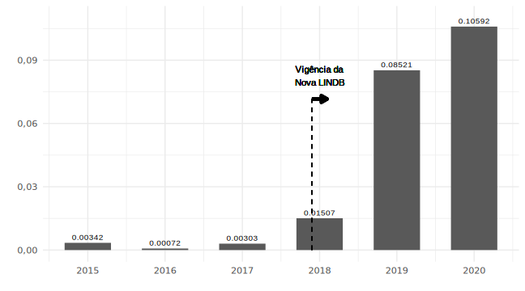
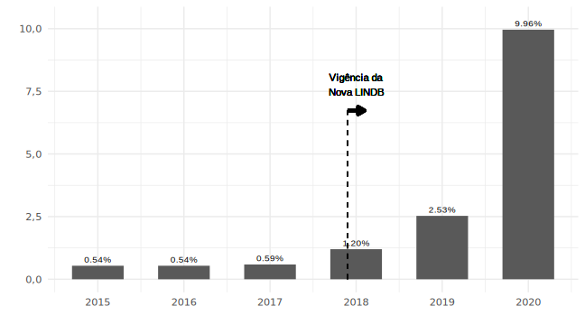

4 Análise dos resultados
No período de análise, compreendido de 2015 a 2020, foram identificados 31.475 acórdãos proferidos pelo TCU, dentre os quais 985 decisões apresentam ao menos um dos termos de interesse com semântica textual relevante ao Consequencialismo, indicada pelo cálculo do tf-idf. A Tabela 1 apresenta os valores do tf-idf para cada termo de interesse ao longo do período de análise, observa-se que o termo “lindb” se destaca com o maior valor acumulado do tf-idf, representando 51,7% da soma total, imediatamente seguido pelo termo “consequências jurídicas”. Juntos, esses dois termos representam 87,4% da relevância semântica dos termos de interesse à investigação.
| Termo | 2015-2020 | Percentual |
|---|---|---|
| lindb | 1,50281 | 51.7% |
| consequências jurídicas | 1,03569 | 35.6% |
| consequências práticas | 0,21337 | 7.3% |
| valores jurídicos abstratos | 0,11570 | 4.0% |
| consequências jurídicas e administrativas | 0,03821 | 1.3% |
| Total | 2,90578 | 100.0% |
Fonte: Elaborada pelos autores.
O Gráfico 1 apresenta o comportamento do valor do tf-idf ao longo do tempo para todos os termos de interesse conjuntamente. A Lei no 13.655, que alterou a LINDB, entrou em vigor na data de 25 de abril de 2018, indicada no gráfico pela linha vertical tracejada. Percebe-se que, a partir de então, a presença dos preceitos relativos ao Consequencialismo tem evoluído significativamente: o crescimento do tf-idf de 2020 em relação ao ano anterior foi acima de 400%.
Gráfico 4.1 – Evolução temporal do tf-idf dos termos de interesse.
Fonte: Elaborado pelos autores.
Apesar de a LINDB estar em vigor há muito tempo, com a publicação do Decreto-Lei nº 4.657, de 4 de setembro de 1942, ao que tudo indica, apenas após a vigência da Nova LINDB é que o termo “lindb” passou a ter presença semântica relevante nos acórdãos do TCU, conforme se observa no Gráfico 2.
Gráfico 4.2 – tf-idf do termo “lindb”.

Fonte: Elaborado pelos autores.
O Gráfico 3 apresenta a evolução temporal do tf-idf para o termo “consequências jurídicas”. Diferentemente dos gráficos anteriores, a relevância desse termo se tornou pronunciada apenas a partir de 2020, sendo que até 2019 se manteve aproximadamente constante.
Gráfico 4.3 – tf-idf do termo “consequências jurídicas”.
Fonte: Elaborado pelos autores.
O Gráfico 4 apresenta a evolução temporal do tf-idf para o termo “consequências práticas”. Muito embora esse termo tenha sido expressamente incluído na LINDB com sua alteração promovida em 2018, percebe-se a sua presença semântica nos acórdãos do TCU anteriormente a esse evento.
Gráfico 4.4 – tf-idf do termo “consequências práticas”.

Fonte: Elaborado pelos autores.
Até 2018 não havia nenhuma ocorrência do termo “valores jurídicos abstratos” nos acórdãos do TCU, que foi introduzido na legislação com a Nova LINDB, assim como os termos mencionados anteriormente. O Gráfico 5 demonstra que esse termo começou a ser empregado com relevância semântica em 2018, tendo crescido significativamente em 2019 e 2020.
Gráfico 4.5 – tf-idf do termo “valores jurídicos abstratos”.
Fonte: Elaborado pelos autores.
O termo “consequências jurídicas e administrativas” também foi introduzido com a alteração de 2018 da LINDB. Embora o termo “consequências jurídicas” já estivesse presente nos acórdãos do TCU antes dessa alteração, a combinação com a expressão “e administrativas” começou a indicar relevância apenas em 2018, com tendência de crescimento nos anos seguintes, conforme apresentado no Gráfico 6.
Gráfico 4.6 – tf-idf do termo “consequências jurídicas e administrativas”.
Fonte: Elaborado pelos autores.
Conforme se depreende da análise temporal do cálculo do tf-idf, dois comportamentos podem ser observados para todos os termos introduzidos na LINDB com a alteração de 2018: (i) antes da alteração, a relevância semântica dos termos nos acórdãos do TCU era nula ou irrelevante, e (ii) após a alteração, esses termos passaram a apresentar relevância nas decisões do Tribunal de forma relativamente significativa e crescente.
A produção média anual do TCU é de 5.246 acórdãos, proferidos pelo Plenário, 1a Câmara e 2a Câmara, totalizando 31.475 decisões no período de 2015 a 2020. Desse montante, foram identificados 985 acórdãos em que o Consequencialismo esteve presente, por meio do cálculo do tf-idf, o que representa 3,13% do total. A Tabela 2 mostra a quantidade de acórdãos publicados a cada ano.
| Consequencialismo | 2015 | 2016 | 2017 | 2018 | 2019 | 2020 | Total |
|---|---|---|---|---|---|---|---|
| Não | 4596 | 5346 | 4757 | 4701 | 4502 | 6588 | 30490 |
| Sim | 25 | 29 | 28 | 57 | 117 | 729 | 985 |
| Total | 4621 | 5375 | 4785 | 4758 | 4619 | 7317 | 31475 |
Fonte: Elaborada pelos autores.
Apesar de o percentual médio de 3,13% não representar aparentemente uma participação relevante de acórdãos marcados pelo Consequencialismo, a análise anual dessa parcela demonstra um crescimento consistente, atingindo 9,96% em 2020, como se observa no Gráfico 7.
Gráfico 4.7 – Percentual de acórdãos com Consequencialismo.

Fonte: Elaborado pelos autores.
Para cada um dos 985 acórdãos, em que se constatou a presença do Consequencialismo, foi possível calcular o valor do tf-idf e analisar como esse parâmetro se distribui no conjunto de decisões. Se ordenados por valores decrescentes de tf-idf, observa-se que alguns poucos acórdãos têm elevado valor de tf-idf, quando comparado com os demais, mas a partir daí o valor de tf-idf dos acórdãos restantes acentuadamente decai assintoticamente tendendo a zero, conforme observado na forma da curva do Gráfico 8.
Gráfico 4.8 – Acórdãos ordenados por valor de tf-idf.
Fonte: Elaborado pelos autores.
Por outro lado, procurou-se analisar também de que modo o conjunto de acórdãos estão distribuídos ao longo dos valores de tf-idf: o Gráfico 9 representa a densidade de acórdãos por intervalos fixos de tf-idf. Assim, o primeiro intervalo, cujo limite inferior é tf-idf = 0,000 e cujo limite superior é tf-idf = 0,002, podendo ser indicado pela notação [0,000; 0,002[ ou 0,000 ≤ tf-idf < 0,002, concentra 449 acórdãos; enquanto o último intervalo [0,046; 0,048[ contém apenas 1 acórdão. Portanto, é possível verificar que há 6 acórdãos que se localizam na metade superior de valores de tf-idf e os demais acórdãos, que representam 99,4% do total, na metade inferior.
Gráfico 4.9 – Densidade de acórdãos.
Fonte: Elaborado pelos autores.
O TCU é um órgão colegiado, composto por nove Ministros, cujas decisões são proferidas pelo Plenário ou por uma de suas duas Câmaras. Além disso, compõem a Corte de Contas quatro Ministros-Substitutos, os quais terão, quando em substituição a Ministros, direitos e prerrogativas assegurados nos termos do Regimento Interno. Assim, os acórdãos do TCU podem ser relatados por um dos treze Ministros em exercício na Corte que, no período de 2015 a 2020, agrupados por relatoria e ordenados pelo valor de tf-idf, constituem os dados apresentados na Tabela 3.
| Ministro Relator | tf-idf | Acórdãos | Média |
|---|---|---|---|
| Benjamin Zymler | 0,45275 | 147 | 0,00308 |
| Vital Do Rêgo | 0,42830 | 134 | 0,00320 |
| Aroldo Cedraz | 0,39318 | 108 | 0,00364 |
| Augusto Nardes | 0,35912 | 103 | 0,00349 |
| Bruno Dantas | 0,34087 | 124 | 0,00275 |
| Walton Alencar Rodrigues | 0,31645 | 98 | 0,00323 |
| Ana Arraes | 0,29671 | 119 | 0,00249 |
| Raimundo Carreiro | 0,14954 | 65 | 0,00230 |
| Marcos Bemquerer | 0,05068 | 15 | 0,00338 |
| André De Carvalho | 0,04446 | 24 | 0,00185 |
| Augusto Sherman | 0,04333 | 24 | 0,00181 |
| Weder De Oliveira | 0,02305 | 13 | 0,00177 |
| José Mucio Monteiro | 0,00734 | 11 | 0,00067 |
| Total | 2,90578 | 985 | 0,00295 |
Fonte: Elaborada pelos autores.
Interessa observar que o Ministro Benjamin Zymler conta com o maior valor de tf-idf indicativo da presença do Consequencialimos nas decisões da Corte de sua relatoria. Por outro lado, o Ministro Benjamin foi também aquele que relatou a maior quantidade de acórdãos no período.
Gráfico 4.10 – tf-idf médio por relatoria.
Fonte: Elaborado pelos autores.
Assim sendo, ao calcular o valor médio de tf-idf por acórdão e reordenar o posicionamento dos Ministros segundo esse parâmetro, observa-se que o Ministro Aroldo Cedraz ocuparia a primeira posição e o Ministro Benjamin estaria na sexta colocação, conforme indica o Gráfico 10. Além disso, nota-se que seis ministros estão acima da média geral, enquanto sete estão abaixo dela.
A Tabela 4 apresenta a distribuição do valor total do tf-idf de acordo com a atuação do Ministério Público junto ao TCU. Observa-se que quando o MPC exerce sua missão de guarda da lei e fiscalização de sua execução, o tf-idf tende a ser mais relevante, concentrando 77,8% do total para o período de análise.
| Atuação do MPC | 2015-2020 | Percentual |
|---|---|---|
| Não | 0,64384 | 22,2% |
| Sim | 2,26194 | 77,8% |
| Total | 2,90578 | 100% |
Fonte: Elaborada pelos autores.
Além disso, a atuação do Ministério Público de Contas coincide com o crescimento, ao longo do tempo, do tf-idf como indicativo da consideração do Consequencialismo nas decisões do Tribunal, como se observa no Gráfico 11.
Gráfico 4.11 – tf-idf segundo atuação do MPC.
Fonte: Elaborado pelos autores.
A Tabela 5 apresenta a distribuição do tf-idf para cada Ministro Relator em função da atuação do MPC. A maioria dos Ministros tende a apresentar maior valor de tf-idf quando o MPC atua nos processos de conta, entretanto, no caso de três Ministros, o comportamento foi inverso: Ministros Marcos Bemquerer, André de Carvalho e Augusto Sherman.
| Relator | Não | Sim | Total | Não % | Sim % |
|---|---|---|---|---|---|
| Benjamin Zymler | 0,06487 | 0,38788 | 0,45275 | 14.3% | 85.7% |
| Vital Do Rêgo | 0,11713 | 0,31117 | 0,42830 | 27.3% | 72.7% |
| Aroldo Cedraz | 0,04783 | 0,34535 | 0,39318 | 12.2% | 87.8% |
| Augusto Nardes | 0,09603 | 0,26309 | 0,35912 | 26.7% | 73.3% |
| Bruno Dantas | 0,06534 | 0,27553 | 0,34087 | 19.2% | 80.8% |
| Walton Alencar Rodrigues | 0,03681 | 0,27964 | 0,31645 | 11.6% | 88.4% |
| Ana Arraes | 0,08178 | 0,21493 | 0,29671 | 27.6% | 72.4% |
| Raimundo Carreiro | 0,02408 | 0,12546 | 0,14954 | 16.1% | 83.9% |
| Marcos Bemquerer | 0,03145 | 0,01923 | 0,05068 | 62.1% | 37.9% |
| André De Carvalho | 0,02980 | 0,01466 | 0,04446 | 67.0% | 33.0% |
| Augusto Sherman | 0,03571 | 0,00762 | 0,04333 | 82.4% | 17.6% |
| Weder De Oliveira | 0,01004 | 0,01301 | 0,02305 | 43.6% | 56.4% |
| José Mucio Monteiro | 0,00297 | 0,00437 | 0,00734 | 40.5% | 59.5% |
| Total | 0,64384 | 2,26194 | 2,90578 | 22.2% | 77.8% |
Fonte: Elaborada pelos autores.
São membros do Ministério Público junto ao TCU o Procurador-Geral, os Subprocuradores-Gerais e os Procuradores. Nesse sentido, a Tabela 6 indica a atuação ou não desses membros do MPC nos processos de contas e o valor do tf-idf totalizado para o período de análise. Observa-se que o Procurador Júlio Marcelo apresenta o maior tf-idf indicativo do Consequencialismo, enquanto o Subprocurador-Geral Paulo Bugarin o menor parâmetro.
| Procurador | Não | Sim | Total |
|---|---|---|---|
| Júlio Marcelo | 0,00000 | 0,48575 | 0,48575 |
| Sérgio Caribé | 0,00000 | 0,48290 | 0,48290 |
| Cristina Machado | 0,00000 | 0,42022 | 0,42022 |
| Rodrigo Medeiros | 0,00000 | 0,38317 | 0,38317 |
| Marinus Marsico | 0,00000 | 0,35645 | 0,35645 |
| Lucas Furtado | 0,00000 | 0,08067 | 0,08067 |
| Paulo Bugarin | 0,00000 | 0,05278 | 0,05278 |
| Não atuou | 0,64384 | 0,00000 | 0,64384 |
| Total | 0,64384 | 2,26194 | 2,90578 |
Fonte: Elaborada pelos autores.
O processo de contas compreende o conjunto de atividades de controle externo destinado a avaliar e julgar o desempenho e a conformidade da gestão das pessoas abrangidas pela jurisdição do Tribunal, de acordo com a Lei Orgânica do TCU. Atualmente, a Corte de Contas dispõe de 23 tipos de processos de contas e o Gráfico 12 apresenta a sua ordenação pelo valor decrescente do tf-idf acumulado no período de análise.
Observa-se que os processos de aposentadoria (APOS) e de tomada de contas especial (TCE) concentram 80% na curva de Pareto. Embora esse comportamento, em certa medida, fosse esperado, vez que esses processos são os mais numerosos dentre os tipos conduzidos pela Corte de Contas, o TCE acumula mais processos, 13.914 no período de análise, mas apresenta menor valor de ti-idf (0,65642) quando comparado com o APOS, 6.126 processos e 1,69754 de tf-idf.
Gráfico 4.12 – tf-idf por tipo de processo.
Fonte: Elaborado pelos autores.
As ações de controle externo são conduzidas pelas unidades técnicas do TCU. Trata-se das secretarias de controle externo que integram as secretarias do Tribunal. Além da fiscalização, essas unidades técnicas são encarregadas de assessorar os relatores em matéria inerente ao controle externo e oferecer subsídios técnicos para julgamento de contas e apreciação dos demais processos relativos aos órgãos e entidades sujeitos à jurisdição do Tribunal.
Nesse sentido, a Tabela 7 apresenta a distribuição do tf-idf entre as unidades do TCU, ao longo do período de análise. A Secretaria-Geral Adjunta de Controle Externo (Adgecex) concentra os maiores valores, enquanto a Secretaria-Geral da Presidência (Segepres) e a Secretaria-Geral de Controle Externo (Segecex) registraram algum nível de td-idf em acórdãos proferidos antes da Nova LINDB, mas recentemente não mais.
| Unidade | 2015 | 2016 | 2017 | 2018 | 2019 | 2020 | Total |
|---|---|---|---|---|---|---|---|
| Adgecex | 0,02655 | 0,02331 | 0,02221 | 0,06844 | 0,17922 | 1,85679 | 2,17652 |
| Não atuou | 0,00394 | 0,00068 | 0,01599 | 0,01089 | 0,13560 | 0,15169 | 0,31879 |
| Cosocial | 0,00182 | 0,00037 | 0,00118 | 0,00647 | 0,03484 | 0,13651 | 0,18119 |
| Coinfra | 0,00130 | 0,00469 | 0,00034 | 0,00666 | 0,04311 | 0,10803 | 0,16413 |
| Coeconomia | NA | 0,00002 | 0,00145 | 0,00093 | 0,02951 | 0,02753 | 0,05944 |
| Segepres | 0,00535 | NA | NA | NA | NA | NA | 0,00535 |
| Segecex | NA | 0,00036 | NA | NA | NA | NA | 0,00036 |
| Total | 0,03896 | 0,02943 | 0,04117 | 0,09339 | 0,42228 | 2,28055 | 2,90578 |
Fonte: Elaborada pelos autores.